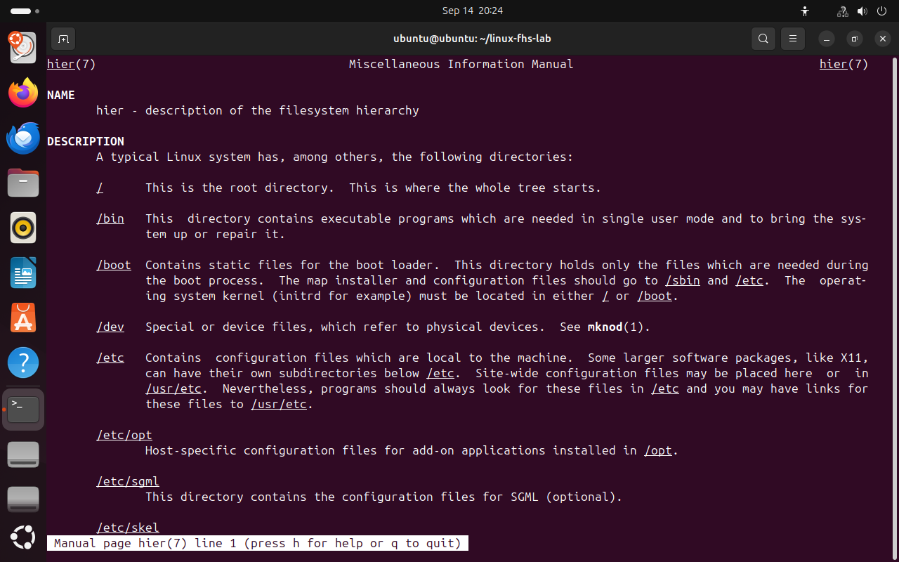

Часть 2 из 8
Назначение каталогов и стандарт FHS
В этой части рассмотрим, по какому принципу файлы распределяются по каталогам, какие каталоги описаны стандартом FHS и что хранится в каталоге настроек /etc.
2.1 Стандарт FHS
Расположение файлов в Linux не случайно. Оно описано стандартом FHS (Filesystem Hierarchy Standard), который поддерживает Linux Foundation. Стандарт определяет, для каких данных предназначен каждый основной каталог. Благодаря ему администратор знает, где искать настройки, журналы или исполняемые файлы любой установленной программы.
Основной принцип FHS: файлы распределяются не по программам, а по типу данных. У одной программы исполняемый файл, настройки и журналы окажутся в разных каталогах. Такое разделение позволяет обновлять программы, не затрагивая настройки, и делать резервные копии только тех данных, которые меняются.
| Каталог | Назначение |
|---|---|
/etc | настройки системы и программ |
/usr | программы, библиотеки, документация |
/var | данные, которые изменяются во время работы: журналы, очереди, базы |
/home | домашние каталоги пользователей |
/tmp | временные файлы |
/boot | файлы загрузки системы |
/dev | файлы устройств |
/proc, /sys | сведения о процессах и устройствах, которые предоставляет ядро |
/mnt, /media | точки подключения дисков и съёмных носителей |
/opt | сторонние программы, устанавливаемые целиком в один каталог |
/srv | данные, которые отдают сетевые службы |
ls -d /boot /etc /home /opt /srv /usr /var /mnt /media# вывести сами каталогиls -ld /root# каталог /rootls -la /opt /srv# содержимое /opt и /srv
- 1все каталоги на месте
- 2в /opt и /srv нет файлов
 Весь снимок ↗
Весь снимок ↗Каталоги из стандарта присутствуют в Ubuntu. Пустые /opt и /srv означают, что в них ещё ничего не устанавливали.
Краткое описание иерархии входит в справочную систему Ubuntu и открывается командой man hier.
{kind=link}

Весь снимок ↗Страница справки hier(7).
2.2 Каталог настроек /etc
В /etc находятся конфигурационные файлы — текстовые файлы, в которых задаются параметры системы и служб. Программы читают их при запуске. Исполняемых файлов в /etc нет. Когда пакет обновляется, менеджер пакетов заменяет файлы программы, но не перезаписывает изменённые администратором настройки.
Для примера рассмотрим три файла. /etc/os-release содержит название и версию дистрибутива, /etc/hostname — имя компьютера, /etc/hosts — таблицу соответствия имён и IP-адресов, которую система использует до обращения к DNS.
cat /etc/os-releasecat /etc/hostnamecat /etc/hosts
- 1название и версия дистрибутива
- 2идентификатор для скриптов
- 3имя компьютера
- 4адрес 127.0.0.1 обозначает сам компьютер
 Весь снимок ↗
Весь снимок ↗Три конфигурационных файла из /etc.
2.3 Учётные записи пользователей
Сведения о пользователях также относятся к настройкам и хранятся в файле /etc/passwd. Каждая строка описывает одну учётную запись и состоит из семи полей, разделённых двоеточием: имя, отметка о пароле, числовой идентификатор пользователя (UID), идентификатор группы (GID), описание, домашний каталог и командная оболочка. Сами пароли хранятся отдельно, в защищённом файле /etc/shadow.
getent passwd "$(id -un)"# вывести строку своей учётной записиfind /etc -maxdepth 1 -type f | head -8# первые файлы в /etcfind /etc -mindepth 1 -maxdepth 1 -type d | head -8# первые подкаталоги /etc
- 1имя
- 2пароль хранится в /etc/shadow
- 3UID
- 4GID
- 5домашний каталог
- 6оболочка
 Весь снимок ↗
Весь снимок ↗Строка учётной записи из семи полей.
2.4 Размещение файлов программы на примере CUPS
Принцип FHS хорошо виден на службе печати CUPS. Она устанавливается одним пакетом cups-daemon, но его файлы распределены по разным каталогам. Список файлов пакета выводит команда dpkg -L.
cd ~dpkg -S /usr/sbin/cupsd# пакет, которому принадлежит программа cupsddpkg -L cups-daemon | grep --color=never -xE '/(etc/cups|usr/sbin/cupsd|var/(log|spool|cache)/cups|lib/systemd/system/cups.service)'# основные файлы пакетаls -ld /run/cups# каталог работающей службыsystemctl is-active cups# состояние службы
- 1настройки печати
- 2программа и описание службы
- 3кэш, журналы и очередь заданий печати
 Весь снимок ↗
Весь снимок ↗Файлы одного пакета распределены по назначению.
Итоги части 2
- Стандарт FHS определяет назначение основных каталогов Linux.
- Файлы распределяются по типу данных: настройки —
/etc, программы —/usr, изменяемые данные —/var. - Конфигурационные файлы — текстовые, программы читают их при запуске.
- Учётные записи описаны в
/etc/passwd, пароли хранятся в/etc/shadow.
В отчётСнимок с cat /etc/os-release и строкой своей учётной записи.